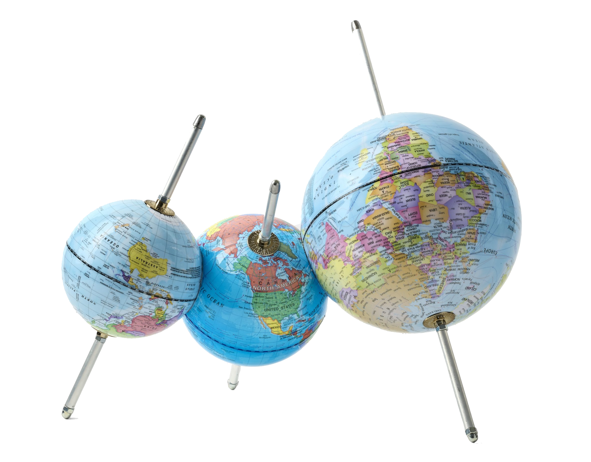

2026 to now
MA in Digital and Public Humanities
Ca’ Foscari University of Venice
Digital and Public Humanities, Ca’ Foscari, Venice.

I study computational technologies and the philosophies they manufacture. I am particularly interested in machine translation and virtual private networks, among other technologies that help us map alternative geographies and question the limits of representation.
As a Fondazione Alfonso Coin scholar, I study Digital and Public Humanities at VeDPH, Ca’ Foscari University of Venice, living and working in one of the major centers of early modern technological innovation.
Beyond media studies, my professional interests include UX/UI writing and educational policymaking. In my free time, I enjoy painting, especially still lifes.
I am always interested in collaborating—or even just chatting: feel free to get in touch!
Ca’ Foscari University of Venice
School of Advanced Studies, University of Tyumen
Thesis: “Forms of Reduction: Tokenization Algorithms in Neural Machine Translation”